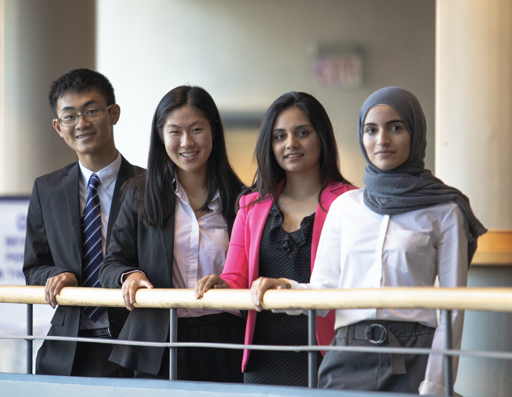

welcome to community
read down below for events and clubs that I’ve participated in!
Glenforest STEM
ONWiE Summit
Glenforest stem is an organization focused on providing students with the resources to pursue educational
pathways and careers in stem. In 2018, we held 'Xplore', the largest student run conference and gained recogniton
from Prime Minister Justin Trudeau.
I was the vice-president in the 2019/2020 school year and held events such as ‘Hour of Code’, ‘University Panel’
and an online augmented reality competition
The Ontario Network of Women in Engineering is a network that aims to support female engineers, students and the
next generation of females in STEM.
In 2019, I was a guest at the ONWiE Summit, a conference that featured various keynote
speakers and brought together influential females in STEM to discuss challenges and next steps.
see more
see more
